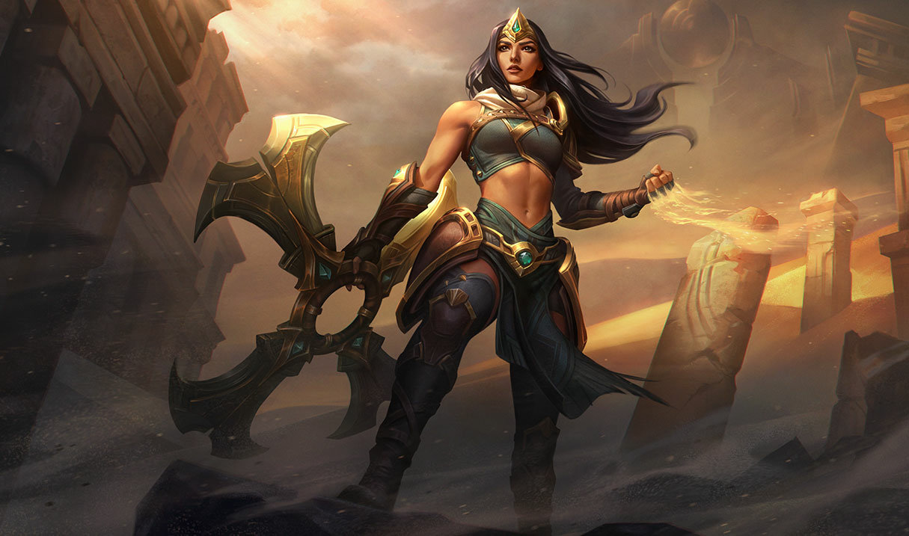

THE BATTLE MISTRESS
SIVIR
SIVIR
ABILITIES

Pasive
Fleet of Foot
Sivir gains a short burst of Move Speed when she attacks an enemy champion.

Ability Q
Boomerang Blade
Sivir hurls her crossblade like a boomerang, dealing damage each way.

Ability W
Ricochet
Sivir's next few basic attacks gain additional attack speed and bounce to nearby targets, dealing reduced damage while bouncing.

Ability E
Spell Shield
Creates a magical barrier that blocks a single enemy ability cast on Sivir. She receives health and a burst of movement speed if a spell is blocked.

Ability R
On The Hunt
Sivir leads her allies in battle, granting them a surge of Move Speed for a period of time. In addition, Sivir's attacks reduce her spell cooldowns.